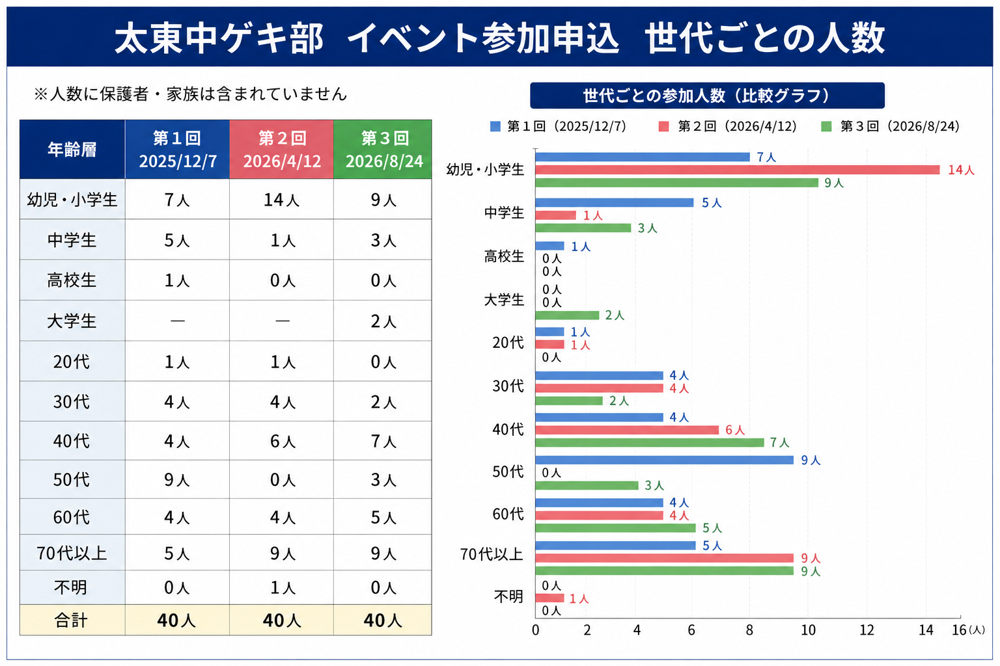

図書館を舞台にした劇


ABOUT
ビブリオ劇場は、ドラマクリエイターのサイトウトシオが、久喜市立太東中学校ゲキ部とともに始めた、本のある場所を舞台に、図書館を舞台にした劇、絵本ドラマリーディング、ビブリオスキットを上演する取組です。
本のある場所と演劇をつなぐ、三本の柱です。
本のある場所が、舞台になる。
図書館、書店、まちライブラリー、ブックカフェ。
本のある場所だからこそ生まれる物語があります。
ビブリオ劇場では、図書館が舞台の作品を図書館で、本が題材の作品を本のある場所で上演します。
物語の世界と現実の場所が重なり合うことで、その場所でしか味わえない演劇体験が生まれます。
ビブリオ劇場は、本と人、人と物語、人と人をつなぐ、新しい文化活動です。
ビブリオ劇場は、演劇を通して、本のある場所とYA（ヤングアダルト）をつなぐことを目指しています。
「ビブリオ劇場」について理解を深めていただくため、Q＆Aの形で解説します。質問をクリックすると回答が開きます。
はい。基本的な流れを理解すれば、学校、図書館、書店、公民館など、さまざまな場所で取り入れることができます。
2023年から2025年までの3年間、毎年8月に神奈川県立青少年センターで2日間開催される「神奈川県中学校演劇講習会」において、各日1回、計6回、「脚本創作」の講座を担当しました。そこで「ビブリオドラマ創作」に取り組んでもらいました。
※「ビブリオドラマ創作」は講習当時の名称です。現在の「ビブリオスキット創作」に当たります。
講座では、現在の「ビブリオスキット」に当たる短い劇について説明した後、参加者が本を出発点に劇を創作しました。最後に2、3組が作品を劇の形にし、ステージで発表しました。参加した先生からは、「1日でここまでできるんですね」「この後、まず図書委員で取り組んでみます」という声も上がりました。
大がかりな舞台設備がなくても、本と人が集まる場所があれば始められます。演劇部であれば、「ビブリオ劇場」の上演を実現することは、それほど難しくありません。
本と演劇を通して、子どもから高齢者まで、異なる世代が出会う場をつくります。
太東中ゲキ部が行った3回のイベントには、幼児・小学生から70代以上まで、幅広い世代から参加申込みがありました。各回40人、合計120人から参加申込みがあり、中学生の表現が幅広い世代の関心を集めていることが分かります。
そこでは、普段は接する機会の少ない中学生と高齢者も、演劇と本を通して同じ時間を共有します。上演後に感想を交わしたり、紹介された本を手に取ったりすることから、新しい対話も生まれます。
図書館が、本を借りるだけの場所ではなく、人と人が出会い、同じ物語を分かち合う場所になる――それも、ビブリオ劇場が生み出す化学反応の一つだと考えています。

※各回の参加申込者40人を世代別に集計しています。保護者・家族は人数に含みません。画像をクリックすると拡大表示できます。
読書への関心を高めるとともに、考える力、伝える力、表現する力、他者と協力する力を育てることが期待できます。
生徒は、本を読み、その魅力やテーマについて話し合い、脚本・演技・音楽・舞台などを組み合わせて、一つの作品を創ります。さらに、完成した作品を図書館や書店で地域の人々に届けます。
こうした活動は、読書活動、探究的な学び、教科横断的な学び、協働・共創、STEAM教育など、これからの教育とも深くつながっています。
ビブリオ劇場を始めたドラマクリエイター・劇作家です。
詳しい紹介を見る →サイトウトシオとともに、ビブリオ劇場の活動をつくる中学生たちです。
ゲキ部の紹介を見る →NEWS


MEDIA

『図書館雑誌』2026年2月号
日本図書館協会発行『図書館雑誌』2026年2月号の特集 「トピックスで追う図書館とその周辺」において、
「図書館が劇場に！」
と題し、ビブリオスキットを含む「ビブリオ劇場」の取組について、 サイトウトシオが執筆しました。
図書館を舞台にした演劇の可能性や、演劇を通して本のある場所と YA（ヤングアダルト）をつなぐ実践について紹介しています。
掲載ページ：P.70〜72（PDFでは21〜23ページ）
ビブリオ劇場が生まれた経緯や、その理念について詳しく紹介しています。
「カレントアウェアネス-E」No.527
2026年7月23日、国立国会図書館の「カレントアウェアネス-E」に、サイトウトシオ執筆の記事が掲載されました。
「YA世代と図書館を繋ぐ：ゲキ部が演じる『ビブリオ劇場』」
ビブリオ劇場が生まれた経緯から、図書館・書店など本のある場所での実践、新たな取組「絵本ドラマリーディング」、久喜市立中央図書館で行っている「図書館部活」までを紹介しています。
演劇部と図書館がつながることで、YA（ヤングアダルト）世代と本のある場所を結び、本と人、人と人が出会う場をつくっていくビブリオ劇場の現在と今後の展望をまとめた記事です。
「ビブリオ劇場」とは何か、なぜこの活動を始めたのかを、これまでの実践とともに詳しく紹介しています。
CREATIVE ACTIVITY
中学生が好きな本を出発点に、自分たちの表現でビブリオスキットを創作します。
CREATION
ビブリオスキットは、本を紹介する短い劇で、ビブリオ劇場を形づくる作品です。中学生が好きな本を出発点に、自分たちの表現で創作します。
創作活動を見る →BEGINNER'S GUIDE
「ビブリオ劇場を始めてみたい」と思った方へ。よくある二つの疑問にお答えします。質問をクリックすると回答が開きます。
はい、できます。
「ビブリオ劇場」には、大きな舞台や特別な照明設備は必要ありません。本棚の前や、普段は閲覧や催しに使っている場所を、そのまま舞台にすることができます。
図書館、学校図書館、書店、まちライブラリー、ブックカフェ、公民館など、本と人が集まる場所であれば始められます。会場の広さや設備に合わせて、上演時間や出演人数を調整できることも「ビブリオ劇場」の特徴です。
いいえ、最初から脚本を作る必要はありません。
音楽を始めるときに、まず既に作曲されている曲を演奏するように、演劇も既存の脚本を上演することから始めてよいのです。
このサイトには、サイトウトシオが作成した短い「ビブリオスキット」を掲載しています。まずはその中から、上演してみたい作品を選んでください。実際に演じることで、台詞の伝え方や本の紹介の仕方、舞台のつくり方が自然に分かってきます。
慣れてきたら、好きな本をもとに、自分たちのビブリオスキットを作ることにも挑戦できます。
CONTACT
本のある場所が、舞台になる。
一緒に、ビブリオ劇場に取り組んでみませんか。
ビブリオ劇場の上演、講演・講師、ワークショップなどについて、ご相談をお受けしています。
ビブリオ劇場について講演・研修を行います。
ビブリオ劇場の制作や絵本ドラマリーディングなどのワークショップを行います。
久喜市立太東中学校ゲキ部による上演や交流企画・共同企画についてご相談いただけます。
取材などご相談ください。
INQUIRY FORM
必要事項をご入力ください。送信ボタンを押すと、宛先を設定した新規メール画面が開きます。